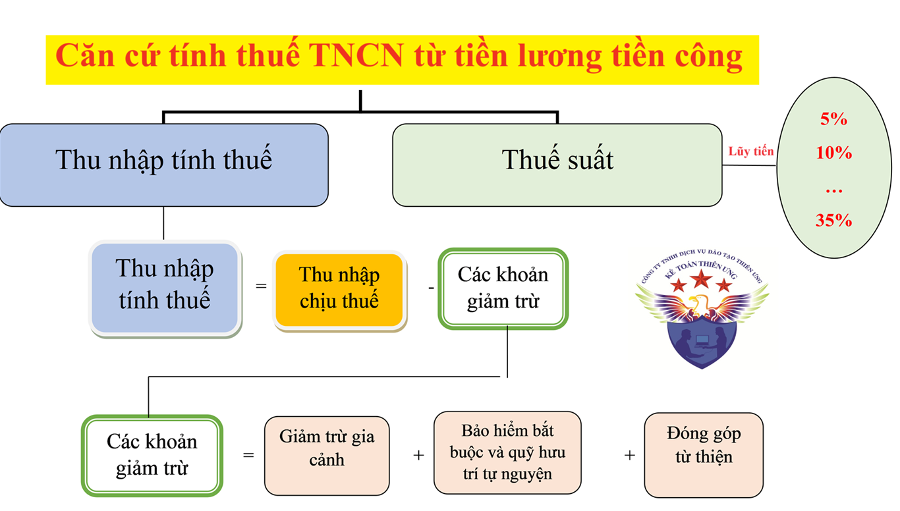
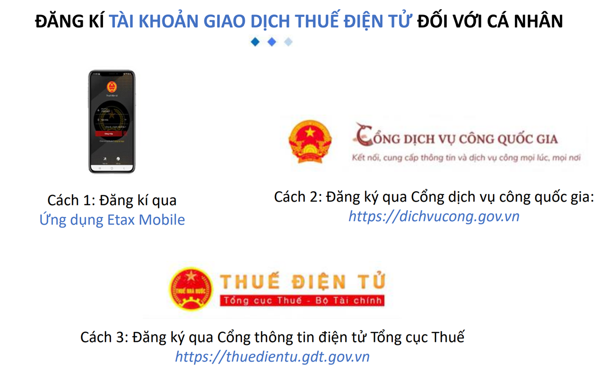
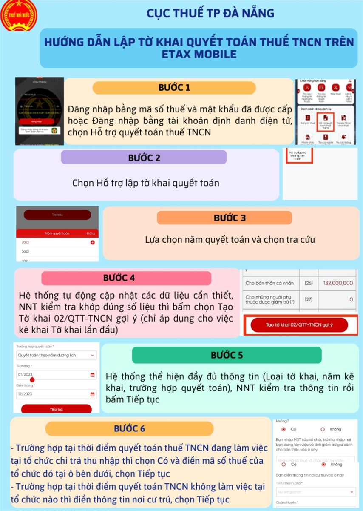
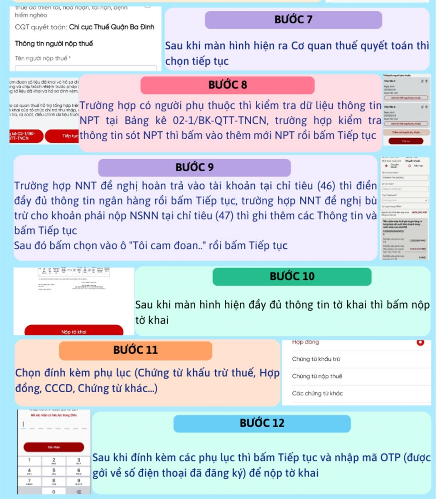

Hướng dẫn cá nhân tự làm quyết toán thuế TNCN online vào năm 2026 cho phần thu nhập đã nhận được vào năm 2025
Thuế thu nhập cá nhân là loại thuế trực thu đánh vào thu nhập nhận được của cá nhân trong một kỳ tính thuế nhất định.
Theo quy định tại khoản 6 Điều 8 Nghị định 126/2020/NĐ-CP thì thuế TNCN là loại thuế có kỳ khai quyết toán theo năm.
Theo quy định tại khoản 6 Điều 8 Nghị định 126/2020/NĐ-CP thì thuế TNCN là loại thuế có kỳ khai quyết toán theo năm.
I. Các văn bản pháp luật quy định và hướng dẫn về quyết toán thuế TNCN cho kỳ tính thuế 2025:
+ Thông tư 111/2013/TT-BTC
+ Thông tư 92/2015/TT-BTC
+ Nghị quyết số 954/2020/UBTVQH14
+ Luật Quản lý thuế số: 38/2019/QH14
+ Nghị định 126/2020/NĐ-CP
+ Thông tư 80/2021/TT-BTC
Lưu ý khi thực hiện làm quyết toán thuế TNCN cho kỳ tính thuế năm 2025
Vào đầu năm 2026, doanh nghiệp sẽ làm tờ khai QTT TNCN cho kỳ tính thuế năm 2025, do đó:
| Nội dung về | Khi làm quyết toán thuế TNCN cho năm 2025, vẫn tính theo mức |
| Giảm trừ bản thân | 11.000.000đ/tháng |
| Giảm trừ người phụ thuộc | 4.400.000đ/người/tháng |
| Biểu thuế lũy tiến | 7 bậc (Theo Thông tư 111/2013/TT-BTC |
Từ kỳ tính thuế năm 2026 trở đi mới thực hiện theo Luật Thuế TNCN số 109/2025/QH15: khi đó mới nâng mức giảm trừ bản thân lên thành 15.500.000đ/tháng và giảm trừ người phụ thuộc là 6.200.000đ/người/tháng
II. Hướng dẫn cá nhân quyết toán thuế TNCN đối với thu nhập từ tiền lương tiền công đã được nhận trong năm 2025:
1. Đối tượng cá nhân phải làm quyết toán thuế TNCN:| Trường hợp |
Bắt buộc phải làm Quyết toán thuế TNCN |
Không bắt buộc phải làm Quyết toán thuế TNCN |
|
Trường hợp 1: Nộp thiếu tiền thuế TNCN (Số thuế TNCN đã nộp trong năm < Số thuế TNCN phải nộp trong năm) |
Cá nhân có số thuế TNCN phải nộp thêm trên 50.000đ => Sẽ phải QTT TNCN để nộp nốt số tiền thuế còn thiếu về NSNN |
Cá nhân có số thuế TNCN phải nộp thêm từ 50.000đ trở xuống => Sẽ không bắt buộc phải làm tờ khai QTT TNCN |
|
Trường hợp 2: Nộp thừa tiền thuế TNCN (Số thuế TNCN đã nộp trong năm > Số thuế TNCN phải nộp trong năm) |
Cá nhân đã nộp thừa tiền thuế muốn bù trừ số thuế TNCN đã nộp vào kỳ sau hoặc cá nhân muốn làm thủ tục hoàn thuế số thuế đã nộp thừa | Cá nhân nộp thừa tiền thuế không muốn bù trừ vào kỳ sau hoặc không muốn làm thủ tục hoàn thuế thì không bắt buộc phải làm QTT TNCN |
|
Trường hợp 3: Không nộp thừa, không nộp thiếu thuế TNCN Gồm có: + Đã nộp đủ: Số thuế TNCN đã nộp = Số thuế TNCN phải nộp + Không phát sinh số thuế TNCN phải nộp |
=> Các cá nhân không nộp thừa, không nộp thiếu thuế TNCN thì không bắt buộc phải làm QTT TNCN |
Cá nhân cư trú có thu nhập từ tiền lương, tiền công từ hai nơi trở lên mà không đáp ứng điều kiện được ủy quyền quyết toán theo quy định (các trường hợp được ủy quyền nêu tại điểm 3 mục I công văn này) thì phải trực tiếp khai quyết toán thuế TNCN với cơ quan thuế nếu có số thuế phải nộp thêm hoặc có số thuế nộp thừa đề nghị hoàn hoặc bù trừ vào kỳ khai thuế tiếp theo.
Cá nhân có mặt tại Việt Nam tính trong năm dương lịch đầu tiên dưới 183 ngày, nhưng tính trong 12 tháng liên tục kể từ ngày đầu tiên có mặt tại Việt Nam là từ 183 ngày trở lên thì năm quyết toán đầu tiên là 12 tháng liên tục kể từ ngày đầu tiên có mặt tại Việt Nam.
Cá nhân là người nước ngoài kết thúc hợp đồng làm việc tại Việt Nam khai quyết toán thuế với cơ quan thuế trước khi xuất cảnh. Trường hợp cá nhân chưa làm thủ tục quyết toán thuế với cơ quan thuế thì thực hiện ủy quyền cho tổ chức trả thu nhập hoặc tổ chức, cá nhân khác quyết toán thuế theo quy định về quyết toán thuế đối với cá nhân. Trường hợp tổ chức trả thu nhập hoặc tổ chức, cá nhân khác nhận ủy quyền quyết toán thì phải chịu trách nhiệm về số thuế TNCN phải nộp thêm hoặc được hoàn trả số thuế nộp thừa của cá nhân.
Cá nhân cư trú có thu nhập từ tiền lương, tiền công được trả từ nước ngoài và cá nhân cư trú có thu nhập từ tiền lương, tiền công được trả từ các tổ chức Quốc tế, Đại sứ quán, Lãnh sự quán chưa khấu trừ thuế trong năm thì cá nhân phải quyết toán trực tiếp với cơ quan thuế, nếu có số thuế phải nộp thêm hoặc có số thuế nộp thừa đề nghị hoàn hoặc bù trừ vào kỳ khai thuế tiếp theo.
Cá nhân cư trú có thu nhập từ tiền lương, tiền công đồng thời thuộc diện xét giảm thuế do thiên tai, hỏa hoạn, tai nạn, bệnh hiểm nghèo ảnh hưởng đến khả năng nộp thuế thì không ủy quyền cho tổ chức, cá nhân trả thu nhập quyết toán thuế thay mà phải trực tiếp khai quyết toán với cơ quan thuế theo quy định.
Ngoài ra:
* Cách cá nhân thực hiện QTT TNCN
- Cá nhân có thu nhập từ tiền lương, tiền công ký hợp đồng lao động từ 03 tháng trở lên tại một đơn vị, đồng thời có thu nhập vãng lai ở các nơi khác bình quân tháng trong năm không quá 10 triệu đồng và đã được khấu trừ thuế TNCN theo tỷ lệ 10% nếu không có yêu cầu thì không phải quyết toán thuế đối với phần thu nhập này;
- Cá nhân được người sử dụng lao động mua bảo hiểm nhân thọ (trừ bảo hiểm hưu trí tự nguyện), bảo hiểm không bắt buộc khác có tích lũy về phí bảo hiểm mà người sử dụng lao động hoặc doanh nghiệp bảo hiểm đã khấu trừ thuế TNCN theo tỷ lệ 10% trên khoản tiền phí bảo hiểm tương ứng với phần người sử dụng lao động mua hoặc đóng góp cho người lao động thì người lao động không phải quyết toán thuế TNCN đối với phần thu nhập này.
+ Cách 1: Cá nhân (NLĐ có thu nhập) tự làm QTT TNCN trực tiếp với cơ quan thuế.
- Hồ sơ QT:
+ Tờ khai mẫu 02/QTT-TNCN ban hành theo TT 80/2021/TT-BTC
+ Phụ lục 02-1/BK-QTT-TNCN (Bảng kê NPT)
+ Phụ lục 02-1/BK-QTT-TNCN (Bảng kê NPT)
- Nơi nộp hồ sơ QTT TNCN: Cá nhân trực tiếp QTT TNCN với CQT thì thực hiện nộp hồ sơ cho CQT theo quy định tại khoản 8, điều 11 của NĐ 126/2020/NĐ-CP
Nhưng muốn được ủy quyền cho doanh nghiệp thực hiện quyết toán thay thì cá nhân (NLĐ) phải đáp ứng được những điều kiện nhất định theo quy định tại điểm d khoản 6 Điều 8 của Nghị định số 126/2020/NĐ-CP. Chi tiết các bạn xem tại đây: Điều kiện ủy quyền quyết toán thuế TNCN 2026
2. Hướng dẫn cá nhân tự làm quyết toán thuế TNCN online vào năm 2026 cho phần thu nhập đã nhận được vào năm 2025
Bước 1: Xác định các căn cứ để kê khai quyết toán thuế TNCN
[1]. Tổng hợp thu nhập

[1]. Tổng hợp thu nhập
Vào năm 2026 này thì các bạn sẽ thực hiện làm QTT TNCN cho phần thu nhập đã nhận được trong năm 2025
=> Do đó, khi làm quyết toán các bạn cần tổng hợp thu nhập từ tiền lương tiền công đã nhận được từ tất cả các nguồn (tất cả các công ty đã trả lương cho bạn) từ ngày 01/01/2025 cho đến hết ngày 31/12/2025 (Thu nhập trong khoảng thời gian này là thu nhập dùng để quyết toán)
=> Do đó, khi làm quyết toán các bạn cần tổng hợp thu nhập từ tiền lương tiền công đã nhận được từ tất cả các nguồn (tất cả các công ty đã trả lương cho bạn) từ ngày 01/01/2025 cho đến hết ngày 31/12/2025 (Thu nhập trong khoảng thời gian này là thu nhập dùng để quyết toán)
[2]. Phân loại thu nhập (xác định thu nhập chịu thuế):
Các bạn cần phải phân loại riêng biệt: khoản thu nhập nào là khoản thu nhập phải chịu thuế, khoản thu nhập nào là không phải tính thuế, được miễn thuế
=> Mục đích phân loại là để xác định được thu nhập chịu thuế:
Thu nhập chịu thuế = Tổng thu nhập - Các khoản thu nhập được miễn thuế/không tính thuế
=> Mục đích phân loại là để xác định được thu nhập chịu thuế:
Thu nhập chịu thuế = Tổng thu nhập - Các khoản thu nhập được miễn thuế/không tính thuế
Chi tiết về các khoản thu nhập không phải tính thuế và thu nhập được miễn thuế các bạn xem tại đây:
(Thu nhập tính thuế là 1 trong những thông tin phải kê khai lên tờ khai QTT TNCN => do đó bắt buộc các bạn phải xác định được số tiền thu nhập chịu thuế của cả năm này)
[3]. Xác định các khoản giảm trừ:
Với khoản giảm trừ gia cảnh thì xác định như sau:
3.1. Mức giảm trừ gia cảnh
Mức giảm trừ gia cảnh được quy định tại Nghị quyết số 954/2020/UBTVQH14 như sau:
+ Mức giảm trừ đối với đối tượng nộp thuế là 11 triệu đồng/tháng (132 triệu đồng/năm);
+ Mức giảm trừ đối với mỗi người phụ thuộc là 4,4 triệu đồng/tháng.
3.2. Giảm trừ cho người phụ thuộc
Để được tính giảm trừ cho người phụ thuộc thì người nộp thuế phải thực hiện đăng ký giảm trừ cho người phụ thuộc theo quy định. Trường hợp người nộp thuế chưa tính giảm trừ gia cảnh cho người phụ thuộc trong năm tính thuế thì được tính giảm trừ cho người phụ thuộc kể từ tháng phát sinh nghĩa vụ nuôi dưỡng khi người nộp thuế thực hiện quyết toán thuế và có đăng ký giảm trừ gia cảnh cho người phụ thuộc.
Trường hợp người nộp thuế có phát sinh nghĩa vụ nuôi dưỡng đối với người phụ thuộc khác không nơi nương tựa theo hướng dẫn tại tiết d.4, điểm d, khoản 1, Điều 9 Thông tư số 111/2013/TT-BTC ngày 15/8/2013 của Bộ Tài chính (như: anh, chị, em ruột; ông, bà nội ngoại; cô, dì...) thì thời hạn đăng ký giảm trừ gia cảnh chậm nhất là ngày 31 tháng 12 của năm tính thuế, quá thời hạn nêu trên thì không được tính giảm trừ gia cảnh cho năm tính thuế đó.
Trường hợp người nộp thuế thuộc diện ủy quyền quyết toán chưa tính giảm trừ gia cảnh cho người phụ thuộc trong năm tính thuế thì cũng được tính giảm trừ cho người phụ thuộc kể từ tháng phát sinh nghĩa vụ nuôi dưỡng khi người nộp thuế thực hiện quyết toán ủy quyền và có đăng ký giảm trừ gia cảnh cho người phụ thuộc thông qua tổ chức trả thu nhập.
Người lao động làm việc tại đơn vị phụ thuộc, địa điểm kinh doanh, được trả thu nhập từ tiền lương, tiền công từ trụ sở chính khác tỉnh thì có thể đăng ký giảm trừ gia cảnh cho người phụ thuộc tại cơ quan thuế quản lý trụ sở chính hoặc đơn vị phụ thuộc, địa điểm kinh doanh. Trường hợp người lao động đăng ký giảm trừ gia cảnh cho người phụ thuộc tại đơn vị phụ thuộc, địa điểm kinh doanh thì đơn vị phụ thuộc, địa điểm kinh doanh có trách nhiệm chuyển hồ sơ chứng minh người phụ thuộc của người lao động về trụ sở chính. Trụ sở chính có trách nhiệm rà soát, lưu giữ hồ sơ chứng minh người phụ thuộc theo quy định và xuất trình khi cơ quan thuế thanh tra, kiểm tra thuế.
Trong thời gian tính giảm trừ gia cảnh, người nộp thuế có thay đổi (tăng/giảm) về NPT hoặc thay đổi nơi làm việc thì người nộp thuế phải thực hiện lại việc đăng ký người phụ thuộc như lần đầu (theo hướng dẫn tại tiết h.2.1.1.1, điểm h, khoản 1, Điều 9 Thông tư số 111/2013/TT-BTC ngày 15/8/2013 của Bộ Tài chính).
3.3. Hồ sơ giảm trừ gia cảnh cho người phụ thuộc
a) Đối với cá nhân nộp hồ sơ đăng ký người phụ thuộc trực tiếp tại cơ quan thuế, hồ sơ bao gồm:
- Bản đăng ký người phụ thuộc theo mẫu 07/ĐK-NPT-TNCN ban hành kèm theo Phụ lục II Thông tư số 80/2021/TT-BTC ngày 29/09/2021 của Bộ Tài chính
- Hồ sơ chứng minh người phụ thuộc theo hướng dẫn tại Điều 1 Thông tư số 79/2022/TT-BTC ngày 30/12/2022 của Bộ Tài chính.
- Trường hợp người phụ thuộc do người nộp thuế trực tiếp nuôi dưỡng phải lấy xác nhận của Ủy ban nhân dân xã/phòng nơi người phụ thuộc cư trú theo mẫu số 07/XN-NPT-TNCN ban hành kèm theo Phụ lục II Thông tư số 80/2021/TT-BTC ngày 29/9/2021 của Bộ Tài chính.
b) Trường hợp cá nhân đăng ký giảm trừ gia cảnh cho người phụ thuộc thông qua tổ chức, cá nhân trả thu nhập thì cá nhân nộp hồ sơ đăng ký người phụ thuộc theo hướng dẫn tại điểm a khoản 3 mục III công văn này cho tổ chức, cá nhân trả thu nhập. Tổ chức, cá nhân trả thu nhập tổng hợp theo Phụ lục Bảng tổng hợp đăng ký người phụ thuộc cho người giảm trừ gia cảnh mẫu số 07/THĐK-NPT-TNCN ban hành kèm theo Phụ lục II Thông tư số 80/2021/TT-BTC ngày 29/9/2021 của Bộ Tài chính và nộp cho cơ quan thuế theo quy định.
Bước 2. Đăng ký tài khoản giao dịch điện tử

Chi tiết cách đăng ký các bạn xem tại đây:
ĐĂNG KÝ TÀI KHOẢN GIAO DỊCH THUẾ ĐIỆN TỬ TRÊN ỨNG DỤNG ETAX MOBILE
(Có cả tài liệu hướng dẫn cách thực hiện làm quyết toán thuế TNCN ngay trên ỨNG DỤNG ETAX MOBILE)
ĐĂNG KÝ TÀI KHOẢN GIAO DỊCH THUẾ ĐIỆN TỬ TRÊN ỨNG DỤNG ETAX MOBILE
(Có cả tài liệu hướng dẫn cách thực hiện làm quyết toán thuế TNCN ngay trên ỨNG DỤNG ETAX MOBILE)
Bước 3. Lập tờ khai quyết toán thuế online (gồm: bước truy cập website và chọn tờ khai quyết toán)
Đối với cá nhân khai quyết toán thuế TNCN trực tiếp với cơ quan thuế, hồ sơ quyết toán thuế TNCN bao gồm:
+ Tờ khai quyết toán thuế thu nhập cá nhân mẫu số 02/QTT-TNCN ban hành kèm theo Phụ lục II Thông tư số 80/2021/TT-BTC ngày 29/9/2021 của Bộ Tài chính.
Mẫu và cách làm tờ khai quyết toán thuế TNCN các bạn xem chi tiết tại đây:
Mẫu 02/QTT-TNCN tờ khai quyết toán thuế TNCN (có hướng dẫn cách làm từng chỉ tiêu trên tờ khai)
Mẫu 02/QTT-TNCN tờ khai quyết toán thuế TNCN (có hướng dẫn cách làm từng chỉ tiêu trên tờ khai)
+ Phụ lục bảng kê giảm trừ gia cảnh cho người phụ thuộc mẫu số 02-1/BK-QTT-TNCN ban hành kèm theo Phụ lục II Thông tư số 80/2021/TT-BTC ngày 29/9/2021 của Bộ Tài chính.
Mẫu và cách làm Phụ lục bảng kê giảm trừ gia cảnh cho NPT các bạn xem chi tiết tại đây:
Mẫu 02-1/BK-QTT-TNCN Phụ lục bảng kê giảm trừ gia cảnh cho người phụ thuộc (có hướng dẫn cách làm từng chỉ tiêu trên tờ khai)
Mẫu 02-1/BK-QTT-TNCN Phụ lục bảng kê giảm trừ gia cảnh cho người phụ thuộc (có hướng dẫn cách làm từng chỉ tiêu trên tờ khai)
+ Bản sao (bản chụp từ bản chính) các chứng từ chứng minh số thuế đã khấu trừ, đã tạm nộp trong năm, số thuế đã nộp ở nước ngoài (nếu có). Trường hợp tổ chức trả thu nhập không cấp chứng từ khấu trừ thuế cho cá nhân do tổ chức trả thu nhập đã chấm dứt hoạt động thì cơ quan thuế căn cứ cơ sở dữ liệu của ngành thuế để xem xét xử lý hồ sơ quyết toán thuế cho cá nhân mà không bắt buộc phải có chứng từ khấu trừ thuế. Trường hợp tổ chức, cá nhân trả thu nhập sử dụng chứng từ khấu trừ thuế TNCN điện tử thì người nộp thuế sử dụng bản thể hiện của chứng từ khấu trừ thuế TNCN điện tử (bản giấy do người nộp thuế tự in chuyển đổi từ chứng từ khấu trừ thuế TNCN điện tử gốc do tổ chức, cá nhân trả thu nhập gửi cho người nộp thuế).
+ Bản sao Giấy chứng nhận khấu trừ thuế (ghi rõ đã nộp thuế theo tờ khai thuế thu nhập nào) do cơ quan trả thu nhập cấp hoặc Bản sao chứng từ ngân hàng đối với số thuế đã nộp ở nước ngoài có xác nhận của người nộp thuế trong trường hợp theo quy định của luật pháp nước ngoài, cơ quan thuế nước ngoài không cấp giấy xác nhận số thuế đã nộp.
+ Bản sao các hóa đơn chứng từ chứng minh khoản đóng góp vào quỹ từ thiện, quỹ nhân đạo, quỹ khuyến học (nếu có).
+ Tài liệu chứng minh về số tiền đã trả của đơn vị, tổ chức trả thu nhập ở nước ngoài trong trường hợp cá nhân nhận thu nhập từ các tổ chức quốc tế, Đại sứ quán, Lãnh sự quán và nhận thu nhập từ nước ngoài.
+ Hồ sơ đăng ký người phụ thuộc theo hướng dẫn tại điểm a khoản 3 mục III công văn này (nếu tính giảm trừ cho người phụ thuộc tại thời điểm quyết toán thuế đối với người phụ thuộc chưa thực hiện đăng ký người phụ thuộc).
Bước 4. Nhập dữ liệu tờ khai quyết toán (gồm: nhập dữ liệu tờ khai quyết toán thuế và các phụ lục giảm trừ gia cảnh)
Bước 5. Gửi nộp tờ khai
Bước 6. Gửi hồ sơ phụ lục đính kèm
Bước 7. Tra cứu tờ khai đã gửi
Chi tiết về các thực hiện bước số 3, 4 , 5, 6 và 7 thì các bạn xem tại đây: Tài liệu hướng dẫn cá nhân tự kê khai quyết toán thuế TNCN
3. Nơi nộp hồ sơ quyết toán thuế TNCN:
Cá nhân trực tiếp QTT TNCN với CQT thì thực hiện nộp hồ sơ cho CQT theo quy định tại khoản 8, điều 11 của NĐ 126/2020/NĐ-CP như sau:
8. Địa điểm nộp hồ sơ khai thuế đối với người nộp thuế là cá nhân có phát sinh nghĩa vụ thuế đối với thu nhập từ tiền lương, tiền công thuộc loại phải quyết toán thuế thu nhập cá nhân theo quy định tại điểm d khoản 4 Điều 45 Luật Quản lý thuế như sau:
a) Cá nhân trực tiếp khai thuế theo tháng hoặc quý theo quy định tại khoản 1 Điều 8, Điều 9 Nghị định này, bao gồm:
a.1) Cá nhân cư trú có thu nhập từ tiền lương, tiền công do tổ chức, cá nhân tại Việt Nam trả thuộc diện chịu thuế thu nhập cá nhân nhưng chưa khấu trừ thuế thì cá nhân nộp hồ sơ khai thuế đến cơ quan thuế trực tiếp quản lý tổ chức, cá nhân trả thu nhập.
a.2) Cá nhân cư trú có thu nhập từ tiền lương, tiền công trả từ nước ngoài thì cá nhân nộp hồ sơ khai thuế đến cơ quan thuế quản lý nơi cá nhân phát sinh công việc tại Việt Nam. Trường hợp nơi phát sinh công việc của cá nhân không ở tại Việt Nam thì cá nhân nộp hồ sơ khai thuế đến cơ quan thuế nơi cá nhân cư trú.
b) Cá nhân trực tiếp khai quyết toán thuế theo quy định tại khoản 6 Điều 8 Nghị định này bao gồm:
b.1) Cá nhân cư trú có thu nhập tiền lương, tiền công tại một nơi và thuộc diện tự khai thuế trong năm thì nộp hồ sơ khai quyết toán thuế tại cơ quan thuế nơi cá nhân trực tiếp khai thuế trong năm theo quy định tại điểm a khoản này. Trường hợp cá nhân có thu nhập tiền lương, tiền công tại hai nơi trở lên bao gồm cả trường hợp vừa có thu nhập thuộc diện khai trực tiếp, vừa có thu nhập do tổ chức chi trả đã khấu trừ thi cá nhân nộp hồ sơ khai quyết toán thuế tại cơ quan thuế nơi có nguồn thu nhập lớn nhất trong năm. Trường hợp không xác định được nguồn thu nhập lớn nhất trong năm thì cá nhân tự lựa chọn nơi nộp hồ sơ quyết toán tại cơ quan thuế quản lý trực tiếp tổ chức chi trả hoặc nơi cá nhân cư trú.
b.2) Cá nhân cư trú có thu nhập tiền lương, tiền công thuộc diện tổ chức chi trả khấu trừ tại nguồn từ hai nơi trở lên thì nộp hồ sơ khai quyết toán thuế như sau:
Cá nhân đã tính giảm trừ gia cảnh cho bản thân tại tổ chức, cá nhân trả thu nhập nào thì nộp hồ sơ khai quyết toán thuế tại cơ quan thuế trực tiếp quản lý tổ chức, cá nhân trả thu nhập đó. Trường hợp cá nhân có thay đổi nơi làm việc và tại tổ chức, cá nhân trả thu nhập cuối cùng có tính giảm trừ gia cảnh cho bản thân thì nộp hồ sơ khai quyết toán thuế tại cơ quan thuế quản lý tổ chức, cá nhân trả thu nhập cuối cùng. Trường hợp cá nhân có thay đổi nơi làm việc và tại tổ chức, cá nhân trả thu nhập cuối cùng không tính giảm trừ gia cảnh cho bản thân thì nộp hồ sơ khai quyết toán thuế tại cơ quan thuế nơi cá nhân cư trú. Trường hợp cá nhân chưa tính giảm trừ gia cảnh cho bản thân ở bất cứ tổ chức, cá nhân trả thu nhập nào thì nộp hồ sơ khai quyết toán thuế tại cơ quan thuế nơi cá nhân cư trú.
Trường hợp cá nhân cư trú không ký hợp đồng lao động, hoặc ký hợp đồng lao động dưới 03 tháng, hoặc ký hợp đồng cung cấp dịch vụ có thu nhập tại một nơi hoặc nhiều nơi đã khấu trừ 10% thì nộp hồ sơ khai quyết toán thuế tại cơ quan thuế nơi cá nhân cư trú.
Cá nhân cư trú trong năm có thu nhập từ tiền lương, tiền công tại một nơi hoặc nhiều nơi nhưng tại thời điểm quyết toán không làm việc tại tổ chức, cá nhân trả thu nhập nào thì nơi nộp hồ sơ khai quyết toán thuế là cơ quan thuế nơi cá nhân cư trú.
Điểm này được sửa đổi bởi Điều 3 Nghị định 373/2025/NĐ-CP có hiệu lực từ ngày 14/02/2026 như sau:
4. Thời hạn nộp hồ sơ quyết toán thuế TNCN:a) Cá nhân trực tiếp khai thuế theo tháng hoặc quý theo quy định tại khoản 1 Điều 8, Điều 9 Nghị định này, bao gồm:
a.1) Cá nhân cư trú có thu nhập từ tiền lương, tiền công do tổ chức, cá nhân tại Việt Nam trả thuộc diện chịu thuế thu nhập cá nhân nhưng chưa khấu trừ thuế thì cá nhân nộp hồ sơ khai thuế đến cơ quan thuế trực tiếp quản lý tổ chức, cá nhân trả thu nhập.
a.2) Cá nhân cư trú có thu nhập từ tiền lương, tiền công trả từ nước ngoài thì cá nhân nộp hồ sơ khai thuế đến cơ quan thuế quản lý nơi cá nhân phát sinh công việc tại Việt Nam. Trường hợp nơi phát sinh công việc của cá nhân không ở tại Việt Nam thì cá nhân nộp hồ sơ khai thuế đến cơ quan thuế nơi cá nhân cư trú.
b) Cá nhân trực tiếp khai quyết toán thuế theo quy định tại khoản 6 Điều 8 Nghị định này bao gồm:
b.1) Cá nhân cư trú có thu nhập tiền lương, tiền công tại một nơi và thuộc diện tự khai thuế trong năm thì nộp hồ sơ khai quyết toán thuế tại cơ quan thuế nơi cá nhân trực tiếp khai thuế trong năm theo quy định tại điểm a khoản này. Trường hợp cá nhân có thu nhập tiền lương, tiền công tại hai nơi trở lên bao gồm cả trường hợp vừa có thu nhập thuộc diện khai trực tiếp, vừa có thu nhập do tổ chức chi trả đã khấu trừ thi cá nhân nộp hồ sơ khai quyết toán thuế tại cơ quan thuế nơi có nguồn thu nhập lớn nhất trong năm. Trường hợp không xác định được nguồn thu nhập lớn nhất trong năm thì cá nhân tự lựa chọn nơi nộp hồ sơ quyết toán tại cơ quan thuế quản lý trực tiếp tổ chức chi trả hoặc nơi cá nhân cư trú.
b.2) Cá nhân cư trú có thu nhập tiền lương, tiền công thuộc diện tổ chức chi trả khấu trừ tại nguồn từ hai nơi trở lên thì nộp hồ sơ khai quyết toán thuế như sau:
Cá nhân đã tính giảm trừ gia cảnh cho bản thân tại tổ chức, cá nhân trả thu nhập nào thì nộp hồ sơ khai quyết toán thuế tại cơ quan thuế trực tiếp quản lý tổ chức, cá nhân trả thu nhập đó. Trường hợp cá nhân có thay đổi nơi làm việc và tại tổ chức, cá nhân trả thu nhập cuối cùng có tính giảm trừ gia cảnh cho bản thân thì nộp hồ sơ khai quyết toán thuế tại cơ quan thuế quản lý tổ chức, cá nhân trả thu nhập cuối cùng. Trường hợp cá nhân có thay đổi nơi làm việc và tại tổ chức, cá nhân trả thu nhập cuối cùng không tính giảm trừ gia cảnh cho bản thân thì nộp hồ sơ khai quyết toán thuế tại cơ quan thuế nơi cá nhân cư trú. Trường hợp cá nhân chưa tính giảm trừ gia cảnh cho bản thân ở bất cứ tổ chức, cá nhân trả thu nhập nào thì nộp hồ sơ khai quyết toán thuế tại cơ quan thuế nơi cá nhân cư trú.
Trường hợp cá nhân cư trú không ký hợp đồng lao động, hoặc ký hợp đồng lao động dưới 03 tháng, hoặc ký hợp đồng cung cấp dịch vụ có thu nhập tại một nơi hoặc nhiều nơi đã khấu trừ 10% thì nộp hồ sơ khai quyết toán thuế tại cơ quan thuế nơi cá nhân cư trú.
Cá nhân cư trú trong năm có thu nhập từ tiền lương, tiền công tại một nơi hoặc nhiều nơi nhưng tại thời điểm quyết toán không làm việc tại tổ chức, cá nhân trả thu nhập nào thì nơi nộp hồ sơ khai quyết toán thuế là cơ quan thuế nơi cá nhân cư trú.
Điểm này được sửa đổi bởi Điều 3 Nghị định 373/2025/NĐ-CP có hiệu lực từ ngày 14/02/2026 như sau:
Điều 3. Sửa đổi, bổ sung điểm b.2 khoản 8 Điều 11 như sau:
“b.2) Cá nhân cư trú có thu nhập tiền lương, tiền công thuộc diện tổ chức chi trả khấu trừ tại nguồn từ hai nơi trở lên thì nộp hồ sơ khai quyết toán thuế tại cơ quan thuế quản lý trực tiếp tổ chức trả thu nhập lớn nhất trong năm. Trường hợp có nhiều nguồn thu nhập lớn nhất trong năm mà các nguồn thu nhập đó bằng nhau thì cá nhân nộp hồ sơ quyết toán tại một trong những cơ quan thuế quản lý trực tiếp tổ chức chi trả các nguồn thu nhập lớn nhất trên.
Trường hợp cá nhân nộp hồ sơ khai quyết toán thuế thu nhập cá nhân không đúng quy định nêu trên thì cơ quan thuế nơi đã tiếp nhận hồ sơ của cá nhân đó căn cứ thông tin trên hệ thống cơ sở dữ liệu ngành thuế hỗ trợ chuyển hồ sơ đến cơ quan thuế quản lý trực tiếp tổ chức trả thu nhập để thực hiện quyết toán thuế thu nhập cá nhân theo quy định pháp luật.
Đối với cá nhân trực tiếp quyết toán thuế thu nhập cá nhân, thời hạn chậm nhất là ngày cuối cùng của tháng thứ 4 kể từ ngày kết thúc năm dương lịch; ngày cuối cùng của tháng thứ 4 kể từ ngày kết thúc năm dương lịch là ngày 30/4/2026 và ngày tiếp theo là ngày 01/5/2026 (Ngày nghỉ Lễ), ngày 02/05/2026 là chủ nhật cũng là ngày nghỉ
Nên: thời hạn cá nhân trực tiếp quyết toán thuế thu nhập cá nhân chậm nhất là ngày 03/05/2026.
Trường hợp cá nhân có phát sinh hoàn thuế thu nhập cá nhân nhưng chậm nộp tờ khai quyết toán thuế theo quy định thì không áp dụng phạt đối với vi phạm hành chính khai quyết toán thuế quá thời hạn./.
Kế Toán Diệu Tâm xin chúc các bạn kê khai quyết toán thuế TNCN thành công!
Hướng dẫn các bước làm quyết toán thuế TNCN trên Etax Mobile

